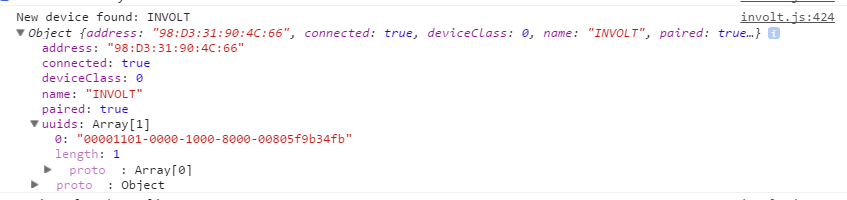

Bluetooth
Wireless prototyping is crucial for mobile projects. Currently Involt supports classic Bluetooth communication with same as default serial sketch.
The bluetooth support was tested with the basic hc-05 device. It's cheap and easy to setup.
This chapter will not describe how to connect hc-05 or how to launch AT mode. There are many tutorials on the internet. Remember to not use software serial - just connect to RX/TX pins but remember to disconnect the cables before uploading sketch.
Configuring the device
Enter the AT mode and write:
AT+UART=57600,0,0 to change speed.
AT+ROLE=0 to set as slave device.
There are many settings but I don't recommend to change them. Maybe change name to INVOLT with AT+NAME=INVOLT
To get the device address you can use AT+ADDR or check this in Involt app console (after changing to BT mode).
In your system turn On bluetooth adapter and pair the device with default 1234 password (for hc-05). The device must be paired before launching the app.
App setup
First, change the isBluetooth variable to true and isSerial to false at the beginning of core/involt.js.
Another thing is the address and UUID of service. The easiest way to find this after changing the isBluetooth is open the chrome console. Open the app, right click and inspect element. It's important to have loader on launch when discovering devices.
You should paste the UUID (and address if you wish to work without loader) to uuid in core/involt.js and manifest.json (this will require reloading your app from chrome extenstions menu).
If everything is correct the app will launch after pressing the connect button. If your device is not on the list press button to search for devices. If there are connection errors check the console.